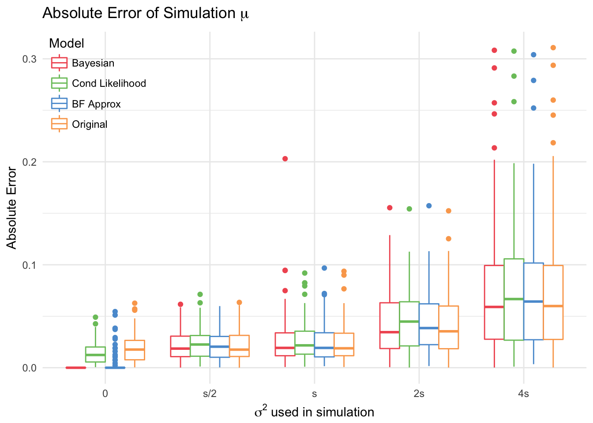
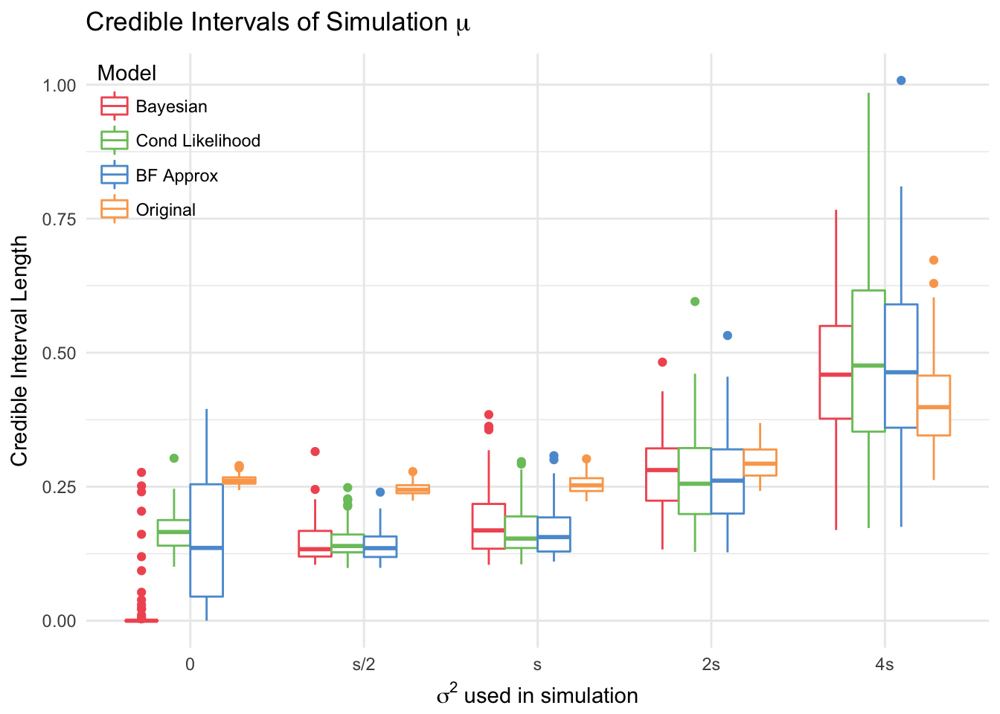
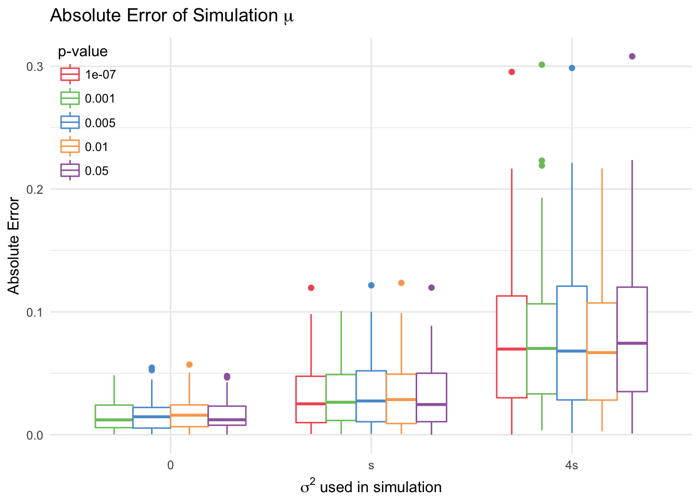
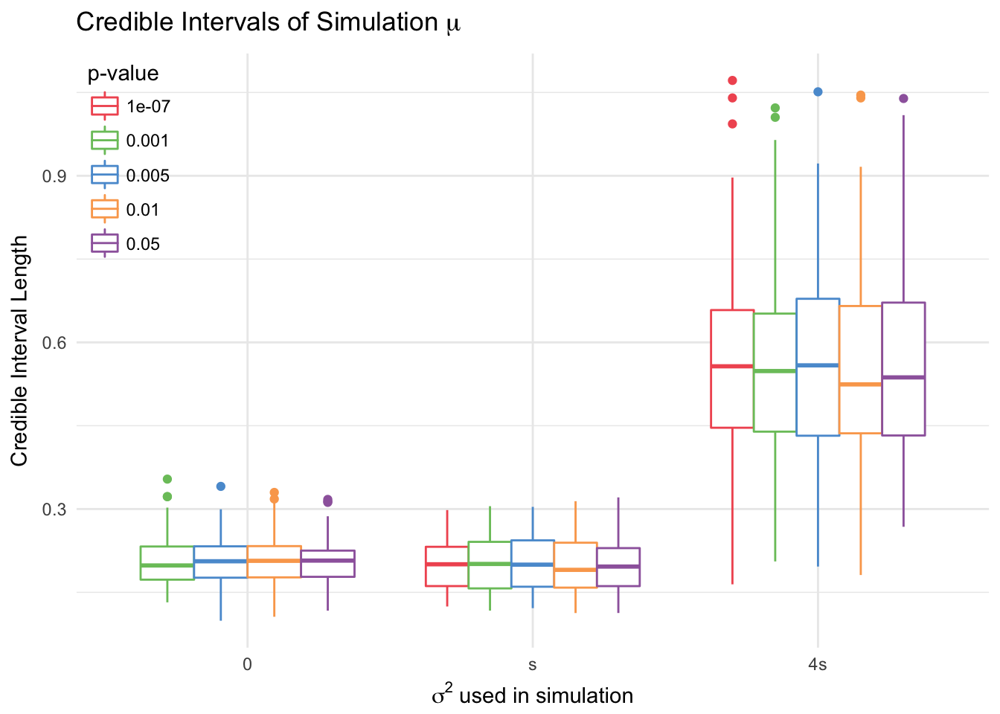
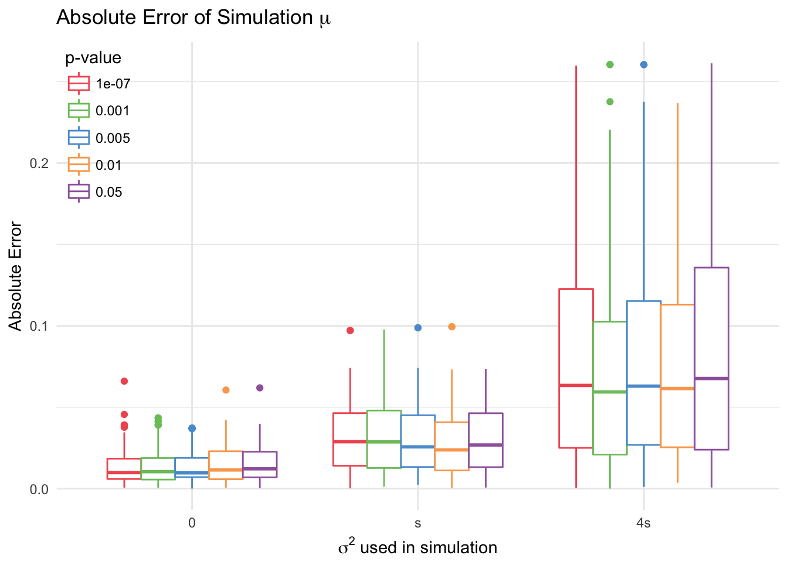
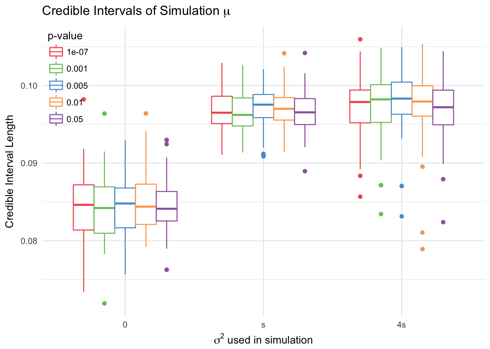

Chapter 4 Hierarchical Simulations
4.1 Data Generation Procedure
The data are generated from a hierarchical (i.e. mixed effect) logistic model as discribed in the data section: if truly associated, \(\mu\) and \(\sigma^2\) have (fixed) nonzero values;\(\beta_j \sim \textsf{N}(\mu, \sigma^2)\). Otherwise, \(\mu=\beta_j = 0, \forall j\). The observed data \(Y_{ij}\) is binary, and has \(P(Y_{ij}=1| \beta_j) = \frac{e^{\beta_j}}{1+e^{\beta_j}}\). The \(j\) index corresponds to the “group” to which the observation belongs.
\[P(Y_{ij}=1) = \textsf{logit}^{-1}(\beta_{j})\\ \beta_{j}|H_1 \sim \textsf{N}(\mu, \sigma^{2})\\ \beta_{j}|H_0 = 0\]
To try to keep this simulation as close to the real data as possible, a preliminary logistic regression with random slope and random p53 coefficient by site was run. This led to the values of \(\mu =0.203 , \sigma^2 = 0.003\). The value of \(\mu\) remained fixed through all the simulations, but different values of \(\sigma\) were used to test the sensitivity of the models: \(\sigma\), \(\sigma/2\), \(2\sigma\), and \(4\sigma\). The number of sites was set to 7, since results using 30 sites were almost identical. Each site had 1000 observations. A total of 100 simulated datasets was created each time.
100 datasets were also simulated under the null hypothesis. They were fit with the models described above, and resulted in reasonable estimates.
4.1.1 Finding “Discovery” Sites
In this simulation study, a logistic regression with fixed effects for sites was conducted to find the site with the smallest p-value less than \(\alpha\). If no sites matched this description, the data was resampled until at least one site was viable. The maximum likelihood estimate of this effect and its variance were added as data for the conditional likelihood model, and the p-value was added to the bayes factor approximation model. The observations for this site were then taken out of the data.
4.2 Results
4.2.1 Sensitivity
4.2.1.1 \(\mu\)
4.2.1.1.1 RMSE
As expected, the models performed more poorly as \(\sigma\) increased. Out of the three proposed models (compared with the original), the fully bayesian and BF approximation models performed best when there was no true effect (since they were the only ones that that had this option). However, there were some simulated datasets where the bayes factor model estimate was actually nonzero and quite large, which suggests that it is not nearly as reliable as the bayesian model.
At small variances (s/2, s, 2s), the original and bayesian models outperform the others. This is not surprising since the other models only have access to \(\frac{6}{7}\) of the data. The Bayesian model actually has a slightly higher lower RMSE than the other models when there is a true association.

| mu=0 | s/2 | s | 2s | 4s | |
|---|---|---|---|---|---|
| Bayesian | 0.0000000 | 0.0266044 | 0.0316132 | 0.0525072 | 0.1036748 |
| Cond Likelihood | 0.0205718 | 0.0269924 | 0.0334522 | 0.0543457 | 0.1087974 |
| BF Approx | 0.0136705 | 0.0291403 | 0.0348389 | 0.0579472 | 0.1154215 |
| Original | 0.0246810 | 0.0259643 | 0.0309745 | 0.0499914 | 0.1032853 |
4.2.1.1.2 Coverage
The conditional likelihood and BF approximation models are the most conservative, with the intervals covering 0 more times than the others for large values of \(\sigma\). All models have very high coverage in general.
The Bayesian model had the shortest intervals, and the original model had the largest. Thus, even though the coverage and RMSE are around the same, the new models are preferable to the original. This does not apply to the simulation with \(\sigma=4s\), because \(4s>\mu\), which leads to more negative site effects. Thus, it makes sense for models to have wider credible intervals for these simulations.

4.2.1.2 \(\xi\)
While one would expect the probability of being associated (\(\xi\)) to also increase with \(\sigma\), this was not true for either the fully bayesian model nor the bayes factor approximation one, both of which had consistent posterior estimates of \(\xi\). Similarly, the proportion of nonzero \(\mu\) samples from the posterior (this is the same as the proportion of times the latent variable \(i = 1\)), was almost 1 for the truly associated cases, and close to zero for true null. One thing to consider is that under the null hypothesis, the variance across sites would actually be zero, which is why the models identified the association so decisively.
The Bayes Factor approximation model has much larger median \(\xi\) and \(\iota\) because the mass of the distribution of \(\xi\) is shifted towards 1. Thus, even though the median of \(\iota\) is quite low (and rhe median of \(\mu\) is 0), the median of \(\xi\) is greater than \(0.5\).
| mu=0 | s/2 | s | 2s | 4s | |
|---|---|---|---|---|---|
| Bayesian | 0.1885539 | 0.8334633 | 0.8331898 | 0.8311593 | 0.8357240 |
| BF Approx | 0.7873461 | 0.9914407 | 0.9920261 | 0.9924780 | 0.9992027 |
| mu=0 | s/2 | s | 2s | 4s | |
|---|---|---|---|---|---|
| Bayesian | 0.0963794 | 0.9923888 | 0.9917315 | 0.9910799 | 0.9947298 |
| BF Approx | 0.2796165 | 1.0000000 | 1.0000000 | 0.9896530 | 1.0000000 |
4.2.2 Sensitivity of Conditional Likelihood Method to Changes in \(\alpha\)
4.2.3 With Random Effects
The conditional likelihood method with random effects is robust to changes in the level \(\alpha\). To test this, we consider 5 different levels: \(0.05, 0.01, 0.005, 0.001, 10^{-7}\). 100 datasets were sampled, for which at least one location was significant at the smallest \(\alpha\) level. The conditional likelihood model with random effects and without was then fitted for each level.
| 0 | s | 4s | |
|---|---|---|---|
| 0.05 | 0.0188881 | 0.0386697 | 0.1005714 |
| 0.01 | 0.0198722 | 0.0402381 | 0.0900666 |
| 0.005 | 0.0188018 | 0.0400860 | 0.0986015 |
| 0.001 | 0.0191543 | 0.0384415 | 0.0976565 |
| 1e-07 | NA | 0.0385995 | 0.0969108 |

This model shows little difference across levels.
4.2.3.1 No Random Effects
A simpler model than the one proposed has no random effects: \(\beta_j\sim \textsf{N}(\mu, \sigma^2)\) and \(MLE_i \sim \textsf{N}(\mu, SE_i)\).
| 0 | s | 4s | |
|---|---|---|---|
| 0.05 | 0.0192390 | 0.0373407 | 0.1052692 |
| 0.01 | 0.0193837 | 0.0364925 | 0.0929499 |
| 0.005 | 0.0172387 | 0.0375955 | 0.0984933 |
| 0.001 | 0.0187290 | 0.0392056 | 0.0955200 |
| 1e-07 | NA | 0.0395267 | 0.0992272 |

Removing the uncertainty for site-specific means leads to a reduction in the length of the credible intervals for \(\mu\). The interval length in the random effect model was larger for simulations with large variance between sites (\(\sigma^2 = 4s\)) than for simulations with small variance (\(\sigma^2 = s\)), which appropriately captures the uncertainty of the estimate for \(\mu\). However, the model with no random effects creates credible intervals that are the same length for simulations with \(\sigma^2 = 4s\) and \(\sigma^2 = s\). The RMSE is very similar for the two models for each \(\sigma^2\), and neither model’s credible interval length or median estimate changes with \(\alpha\).